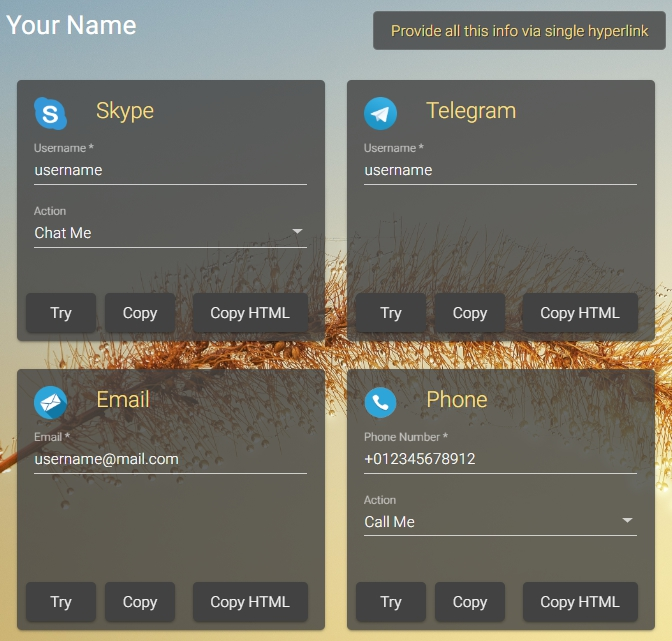
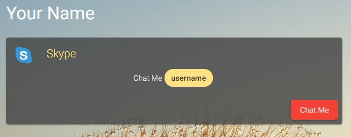
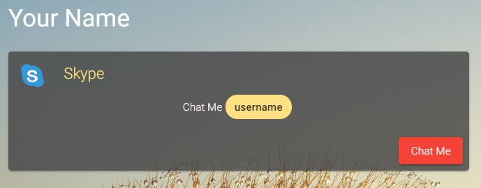

What problem this service solves?
A lot of text processors like Google Docs, Microsoft Word etc, allows use hyperlinks, but they can not open application like browser can.
If you want use applications links in your documents it can be impossible.
Also as example not all email clients allow links to skype call - skype:username?call.
Even if the link will be inserted in the email - it likely will be transformed into plain text when the email opened by the recipient.
How to use this service
You just need fill simple form to get the link: try it, copy or generate HTML code to use in templates.
You can provide list of your channels via single hyperlink or use different links for any channel.
By click on the link your recipients will see web page in browser and can copy provided data or tap action button to use skype, email client or to call a number on a phone-capable device
 

Browser storage keep history of browsed data
This service has no server side logic. It does not keep your info. It is just redirect browser application.
Ask any question or request other functionality
Email Us: admin@answerfrom.me